The Armenian flag and the Dutch lion
At the top of the canvas, an Armenian flag stood beneath GreyBlob’s grey cat. Both groups negotiated with their neighbours. When Dutch builders drew a coat of arms across the same patch, even Dutch participants who backed the agreements struggled to protect it.
Follow the canvas
Step through 14 views of the same patch, from the opening scene to the close of the canvas.
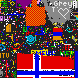

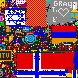

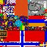

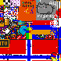

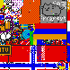

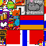

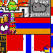

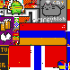

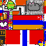

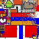

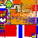

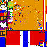

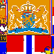


What happened
Two neighbours settle a border
The Armenian flag widened beneath GreyBlob’s banner. An Armenian envoy asked the Dutch for a border, and GreyBlob announced a ceasefire along its southern edge. By the morning of 2 April, the flag, a heart and the cat were all visible.
The Armenian envoy’s request
· Post 62w8sk · Hello, I represent /r/Armenia, the flag to your immediate left. We are few in numbers and will surely die out if your expansion continues, would negotiations of a border and perhaps an alliance be possible?
GreyBlob’s ceasefire
· Post 62xars · r/Armenia ceasefire on the southern border.
DO NOT INVADE THE FLAG.
The Armenian flag to our southern border is being separated by a black border between our land, and we will not cross it. That said, do not hesitate to expand wastward in the checkerboard.
The completed flag
· Post 62y7ms · We finally did it! a full Armenian flag, and Armenia heart are on the map!
The lion crosses the border
A diplomat from r/cirkeltrek had visited GreyBlob. Other participants in the same subreddit were planning Operation Lion. As orange pixels spread across the cat and flag, Armenian participants asked GreyBlob for help. A Dutch visitor to GreyBlob blamed people acting outside the agreement. Minutes later, a new thread in r/cirkeltrek called for annexation.
The diplomat’s visit
· Post 62yetz · Hello! I am a diplomat from /r/cirkeltrek and /r/thenetherlands
We do not intend to harm you, but I bring bad news nonetheless.
As you may know, we violated our peace agreement with Greece. This was not our intent. Among our people is a reckless undercurrent that refuses to listen to any of the public posts on our sub and has only one goal; to expand. The peace treaty with Greece was established early in the game. By sending troops to preventively remove red pixels from the flag we managed to keep this promise for a few hours. By nightfall, the undercurrent was too strong and Greece was lost, despite our efforts.
Although both our subreddits don't wish you any harm, we can't promise to hold them off for the rest of the game. Please consider expanding your area to avoid being lost if it happens again. For now, there is no problem. Please know that we are doing our best to protect greyblob from radicals.
Edit: I am so so sorry. The official plans are now to overwrite Armenia and greyblob for our official weapon. There is nothing I can do. RUN.
Operation Lion
· Post 62yut5 · Operatie Leeuw
The Dutch visitor’s explanation
· Post 62zir4 · Dear /r/greyblobs, we mean you no harm! It's the randoms that are attacking you!
I'm from /r/Cirkeltrek, and in our discord (together with /r/thenetherlands) we have agreed to a no-attack agreement towards Armenia and the Grey Blob. Some of us are trying to undo the damage.
The call for annexation
· Post 62zpa5 · Annexeer Armenië!
Tweede Armeense genocide is bezig, help nu mee!
The displaced groups look for new sites
By mid-afternoon on 2 April, orange filled the patch. A crown, shield and two lions appeared there. Armenian participants tried a site above the Turkish flag and later reported rebuilding above the Indian flag with permission. GreyBlob discussed moving its work to the grey road.
The first proposed move
· Post 62zu9o · New Location for Armenian Flag: Above Turkish Flag
[deleted]
Armenia’s relocation thread
· Post 630itq · Armenian Flag Location: Strategy
[removed]
GreyBlob’s new site
· Post 6312on · Proposal: Turn the grey road into Grey Blob 2.0
Do NOT disrupt the border of the road. There is another faction dedicated to its upkeep, and we will be reverted every time. Instead, let's simply build grey around it, and make a grey city of sorts =)
We can do that fairly easily, and there's open space to the upper left of it around (364, 58). Anyone else willing to start with me?
Report from the new site
· Comment dfqhli0 · NEW PLAN: OUR NEW FLAG IS DEVELOPING OVER INDIA WITH THEIR PERMISSION. WE HAVE NO KNOWN ENEMIES THERE AND PLENTY OF UNCLAIMED SPACE. (275, 614)
Who placed pixels as the coat of arms took shape?
| Interval start (UTC) | r/armenia, no Dutch room | Dutch room, no r/armenia | Both |
|---|---|---|---|
| 06:10 | 27 | 12 | 5 |
| 13:30 | 33 | 165 | 34 |
| 14:10 | 23 | 196 | 19 |
The counts cover the whole pictured area, including the cat. Other accounts also placed pixels there. Posting in a subreddit tells us where someone spoke. It cannot establish who supported a pact or who chose to break it.
Check the record
The timeline places the discussions alongside ten-minute counts and dated canvas images. Times marked H on the timeline count from 16:00 UTC on 31 March 2017.
Open the full timeline · Placements by posting group (TSV) · Placements in the flag and coat of arms (TSV)

The original timeline retains some frame captions numbered for an earlier thread list. This account cites the expanded 59-thread record by post and comment ID. Replay the wider Dutch area.
Browse the 59 source threads
Threads are listed by posting time. Open a title to read the archived post in its original language. Some posts contain only a title.
- · r/armenia
Let's make the Armenian flag with 6 pixels per bar and diagonal to our brother Greece on /r/place!
· Post
62t1vh· Let's make the Armenian flag with 6 pixels per bar and diagonal to our brother Greece on /r/place! - · r/greyblob
The Dutch.
· Post
62v009· The Dutch. Those who have been fighting for the grey can see it already, but we all must prepare for the dutch. They are expanding through Greece, and if we loose to the dutch there will be no blob left. We need to keep peace with Armenia to the south and sure up our grey to the east. We don't want war if it can be avoided, but I fear this sudden expansion. - · r/thenetherlands
The Hollandic lion must stand to the right of the wilhelmus
· Post
62v0za· De Hollandsche leeuw moet rechts van het wilhelmus komen te staan [removed] - · r/armenia
NEW UPDATE: GREECE HAS ALL BUT FALLEN FALLEN TO THE DUTCH, THEIR DEMISE IS IMMINENT AND WE ARE NEXT, EXPAND TO THE WEST AS QUICKLY AS POSSIBLE AND AT ALL COSTS OR ELSE WE WILL MEET THE SAME FATE AS GREECE
· Post
62ve2r· NEW UPDATE: GREECE HAS ALL BUT FALLEN FALLEN TO THE DUTCH, THEIR DEMISE IS IMMINENT AND WE ARE NEXT, EXPAND TO THE WEST AS QUICKLY AS POSSIBLE AND AT ALL COSTS OR ELSE WE WILL MEET THE SAME FATE AS GREECE - · r/cirkeltrek
For the love of god, spare Armenia the fate that Greece has befallen
· Post
62vffi· For the love of god, spare Armenia the fate that Greece has befallen We at /r/Armenia have seen what you have done to poor Greece on /r/place, and ask that you spare us of the same fate. Let us establish an orange boundary between your flag and ours before the Dutch flag begins entering the Armenian one, at which point it will be too late to stop the advance. - · r/cirkeltrek
<------ PEOPLE WHO WANT TO ANNEX THE ARMENIANS AND /R/GREYBLOB
· Post
62vxn8· <------ MENSEN DIE DE ARMENEN EN /R/GREYBLOB WILLEN ANNEXEREN - · r/cirkeltrek
We need a lion
· Post
62w0pm· We moeten een leeuw hebben Een leeuw ergens (desnoods iets annexeren) - · r/cirkeltrek
I am here form r/greyblob.
· Post
62w4r4· I am here form r/greyblob. In previous conflicts we of greyblob have tried to remain neutral. We watched uncomfortably as Greece was taken down, but they owed you tax dollars, so their annexation was justified. We watched to the west as pixel art was over written so your national pride had its place, and we stayed neutral. You have now turned back on us the greyblob, who only wanted peace and stability in out continent. Like the Wehrmacht so may years ago, you have stormed our little country. You have conquered our gray-scale banner like Utrecht. You have dropped pixel bombs on our interior like Rotterdam. We cannot give up our territory for so called peace, but the fighting will be endless. Those good dutch citizens must stand up to tyranny or you too will be part of the problem. TLDR; can't we just go after the french or something? - · r/thenetherlands
Hello, I represent /r/Armenia, the flag to your immediate left. We are few in numbers and will surely die out if your expansion continues, would negotiations of a border and perhaps an alliance be possible?
· Post
62w8sk· Hello, I represent /r/Armenia, the flag to your immediate left. We are few in numbers and will surely die out if your expansion continues, would negotiations of a border and perhaps an alliance be possible? - · r/armenia
Attention all /r/place participants: We must recognize we are a much less populous nation than the Netherlands. If we must, who do you suggest we ask for aid in spreading our flag west?
· Post
62wkn4· Attention all /r/place participants: We must recognize we are a much less populous nation than the Netherlands. If we must, who do you suggest we ask for aid in spreading our flag west? [removed] - · r/cirkeltrek
This is what an alliance with /r/greyblob, our western neighbours, could look like
· Post
62wmev· Dit is hoe een alliantie met /r/greyblob, onze westerlijke buren, eruit zou kunnen zien - · r/greyblob
The dutch are too difficult to fight, we should fill in grey within our boundary and take over the checkerboard over night.
· Post
62wmu6· The dutch are too difficult to fight, we should fill in grey within our boundary and take over the checkerboard over night. [deleted] - · r/greyblob
This is what an alliance with the dutch could look like.
· Post
62woe2· This is what an alliance with the dutch could look like. - · r/greyblob
My proposal for the future of greyblob
· Post
62wx23· My proposal for the future of greyblob http://imgur.com/a/OyS1t We can have our Brayscale banner, Branding, Cat, and Nail and Gear. We can have our independence and assure the independence of our Armenian neighbors who fought the dutch invasion valiantly. What do my brothers and sisters in grey think. - · r/armenia
Great work Armenia!!! We did it!! However, let's not anger the checkerboard region. We just won our battle against the cirkeltrek trolls. Let's not get involved in another fight! Stay strong!
· Post
62x4ti· Great work Armenia!!! We did it!! However, let's not anger the checkerboard region. We just won our battle against the cirkeltrek trolls. Let's not get involved in another fight! Stay strong! - · r/greyblob
Greetings /r/GreyBlob! We would like to establish peaceful diplomatic relations with you.
· Post
62x78n· Greetings /r/GreyBlob! We would like to establish peaceful diplomatic relations with you. Would you mind a black border between our regions? Thank you. - · r/thenetherlands
We at /r/Armenia would like to thank /r/theNetherlands!
· Post
62x8zn· We at /r/Armenia would like to thank /r/theNetherlands! [removed] - · r/greyblob
r/Armenia ceasefire on the southern border.
· Post
62xars· r/Armenia ceasefire on the southern border. DO NOT INVADE THE FLAG. The Armenian flag to our southern border is being separated by a black border between our land, and we will not cross it. That said, do not hesitate to expand wastward in the checkerboard. - · r/cirkeltrek
r/GreyBlob does not wish to hurt you in the Place.
· Post
62y613· r/GreyBlob does not wish to hurt you in the Place. Somebody is adding grey pixels inside your flag, and we DO NOT SUPPORT THEM. Please do not attack the Grey Blob. - · r/armenia
We finally did it! a full Armenian flag, and Armenia heart are on the map!
· Post
62y7ms· We finally did it! a full Armenian flag, and Armenia heart are on the map! - · r/greyblob
Eastern border experiencing some trouble
· Post
62y8z6· Eastern border experiencing some trouble It looks like Dutch are starting to wake up and we're getting some stray red spots in our sea of grey. Keep an eye out for random grey spots in their flag as well. A couple users are trying to invade them and to be clear, WE ARE NOT INVADING THEM. Thanks! :) - · r/greyblob
Hello! I am a diplomat from /r/cirkeltrek and /r/thenetherlands
· Post
62yetz· Hello! I am a diplomat from /r/cirkeltrek and /r/thenetherlands We do not intend to harm you, but I bring bad news nonetheless. As you may know, we violated our peace agreement with Greece. This was not our intent. Among our people is a reckless undercurrent that refuses to listen to any of the public posts on our sub and has only one goal; to expand. The peace treaty with Greece was established early in the game. By sending troops to preventively remove red pixels from the flag we managed to keep this promise for a few hours. By nightfall, the undercurrent was too strong and Greece was lost, despite our efforts. Although both our subreddits don't wish you any harm, we can't promise to hold them off for the rest of the game. Please consider expanding your area to avoid being lost if it happens again. For now, there is no problem. Please know that we are doing our best to protect greyblob from radicals. Edit: I am so so sorry. The official plans are now to overwrite Armenia and greyblob for our official weapon. There is nothing I can do. RUN. - · r/cirkeltrek
Portrait of Máxima or the lion on our new colonies in the east of /r/plaats?
· Post
62yq8h· Portret van Maxima of de leeuw op onze nieuwe koloniën in het oosten van /r/plaats? - · r/cirkeltrek
Petition to make a pact with Goodboye.
· Post
62yu2z· Petitie om een pact te sluiten met Goodboye. Onze expansiedrift is prachtig om te zien, maar nu komen we aan by die mooie pupper. Ik stel voor om contact met ze te maken en te kijken of we de pupper kunnen laten blijven bestaan. Misschien zouden we er ergens een Nederlands vlaggetje erin kunnen verwerken? - · r/cirkeltrek
Operation Lion
· Post
62yut5· Operatie Leeuw - · r/greyblob
Looks like this is it.
· Post
62z2ae· Looks like this is it. The orange is coming in faster than I can fix, and I tried writing in the 'r' properly, but it doesn't look like it'll get the message across. If it's not there in the morning, then it's been fun. - · r/PlaceNL
Plans with /r/Goodboye. Border around it and otherwise hands off.
· Post
62z2ck· Plannen met /r/Goodboye. Rand eromheen en verder afblijven. [deleted] - · r/greyblob
AAAAAAAA THEYRE INVADING
· Post
62z2mj· AAAAAAAA THEYRE INVADING - · r/cirkeltrek
<------ Number of royal subjects who think the Netherlandish Lion won't be stopped by a pussycat on the western border!
· Post
62z2v0· <------ Aantal koninklijke onderdanen die vinden dat de Neederlandsche Leeuw zich niet laat stoppen door een poesje aan de westgrens! - · r/cirkeltrek
I think we should show Armenia who's boss for a moment.
· Post
62z8fw· Ik vind dat we Armenië even moeten laten zien wie de baas is. Laten we onze vlag uitbreiden naar links voor onze Willem. Hij zou heel trots zijn! - · r/cirkeltrek
Plan of attack on the left Wing
· Post
62zcjb· Plan of attack on the left Wing [deleted] - · r/armenia
What is going on in the East? Are the Dutch invading?
· Post
62zgnc· What is going on in the East? Are the Dutch invading? - · r/greyblob
Armenia will do everything it can to preserve both of our territories against cirkeltrek.
· Post
62zgsf· Armenia will do everything it can to preserve both of our territories against cirkeltrek. - · r/greyblob
Help us /r/GreyBlob! You're our only hope! Armenia needs you!
· Post
62zgxh· Help us /r/GreyBlob! You're our only hope! Armenia needs you! - · r/greyblob
Dear /r/greyblobs, we mean you no harm! It's the randoms that are attacking you!
· Post
62zir4· Dear /r/greyblobs, we mean you no harm! It's the randoms that are attacking you! I'm from /r/Cirkeltrek, and in our discord (together with /r/thenetherlands) we have agreed to a no-attack agreement towards Armenia and the Grey Blob. Some of us are trying to undo the damage. - · r/thenetherlands
Hello from /R/Armenia, please do not invade us.
· Post
62zjyv· Hello from /R/Armenia, please do not invade us. [removed] - · r/armenia
I am so sorry, I can't do anything about it, apparently the Netherlands are going to take over the Armenian flag and GreyBlob :'(
· Post
62zlio· I am so sorry, I can't do anything about it, apparently the Netherlands are going to take over the Armenian flag and GreyBlob :'( [removed] - · r/greyblob
I am so, so sorry! I can't do anything about it, the masses have spoken... The Netherlands is taking over Armenia and the Grey Blob...
· Post
62zn7c· I am so, so sorry! I can't do anything about it, the masses have spoken... The Netherlands is taking over Armenia and the Grey Blob... Because we can't take over the right corner due to Overwatch pixels, the majority of the Dutch placers have decided to take over the Grey blob and Armenia. I can't do anything about this :( - · r/thenetherlands
Armenia too shall bow before Wilhelmus van Nassauwe (Apparently)
· Post
62znbc· Ook Armenië zal buigen voor Wilhelmus van Nassauwe (Blijkbaar) [removed] - · r/greyblob
INPOLDEREN! INPOLDEREN!
· Post
62zo0n· INPOLDEREN! INPOLDEREN! - · r/PlaceNL
the new plan!
· Post
62zonc· het nieuwe plan! - · r/cirkeltrek
Annex Armenia!
· Post
62zpa5· Annexeer Armenië! Tweede Armeense genocide is bezig, help nu mee! - · r/armenia
RECLAIM IT
· Post
62zpm9· INPOLDEREN - · r/armenia
Swear allegiance to your new Kingdom!
· Post
62zpsr· Zweer trouw aan uw nieuwe Koninkrijk! - · r/czech
Netherlands just invaded Armenia and are expanding further westwards. Be prepared to defend our borders.
· Post
62zr2j· Netherlands just invaded Armenia and are expanding further westwards. Be prepared to defend our borders. - · r/greyblob
Hold your ground!
· Post
62zrl1· Hold your ground! As many of you know, the Dutch are invading. We've already lost most of our neighbor to the South and they aren't letting up. Keep fighting for our blob. I'm reaching out to any potential alliances for help. We've held out this long, we can put up a good fight at the very least! - · r/armenia
Armenian flag is attacked. Don't let him fall!
· Post
62zs23· Armenian flag is attacked. Don't let him fall! [deleted] - · r/cirkeltrek
Final plans for the left flank! To work, fellow colonists!
· Post
62zsof· Definitieve plannen voor de linkerflank! Aan de arbeid, medekolonisten! - · r/armenia
New Location for Armenian Flag: Above Turkish Flag
· Post
62zu9o· New Location for Armenian Flag: Above Turkish Flag [deleted] - · r/cirkeltrek
Armenia victim of genocide; help them found a new state at (430, 150)
· Post
62zwtm· Armenië slachtoffer van genocide; helpt hen een nieuwe staat te stichten op (430, 150) - · r/armenia
Armenian Flag Location: Strategy
· Post
630itq· Armenian Flag Location: Strategy [removed] - · r/greyblob
Where should we start our new base?
· Post
630jj2· Where should we start our new base? The small group of grey pixels at 456, 10 seems promising and hopefully the Dutch will leave us alone. However, I did see some grey near greenlattice that could help increase our presence. - · r/cirkeltrek
After annexing them, help replace the Armenian flag... right above Turkey
· Post
630lqj· After annexing them, help replace the Armenian flag... right above Turkey [deleted] - · r/PlaceNL
After the Coat of Arms, take over the right-hand corner?
· Post
630mgr· Na het Wapen de recherhoek overnemen? Als het wapen af is, Is er helemaal rechtboven in de hoek (achter de rainbowroad) een plekje wat mooier zou zijn als het oranje was - · r/armenia
GUYS, I'VE LINKED THE COORDS OF THE NEW LOCATION FOR THE ARMENIAN FLAG, WE ARE BUILDING IT RIGHT ABOVE THE TURKISH FLAG, ITS ALREADY PARTIALLY COMPLETE, LET'S KEEP AT IT AND REMEMBER WE ARE ALLIED WITH THE TURKS AND GREEKS BELOW US
· Post
630nvy· GUYS, I'VE LINKED THE COORDS OF THE NEW LOCATION FOR THE ARMENIAN FLAG, WE ARE BUILDING IT RIGHT ABOVE THE TURKISH FLAG, ITS ALREADY PARTIALLY COMPLETE, LET'S KEEP AT IT AND REMEMBER WE ARE ALLIED WITH THE TURKS AND GREEKS BELOW US - · r/cirkeltrek
A request from the people at /r/greyblob
· Post
630sm0· Une demande des personnes à /r/greyblob [deleted] - · r/greyblob
The grey blob we are building at (460, 9) is too close to the Dutch and will likely get run over. What to you think about helping to grow the grey road at (374, 61)?
· Post
630ybo· The grey blob we are building at (460, 9) is too close to the Dutch and will likely get run over. What to you think about helping to grow the grey road at (374, 61)? - · r/greyblob
Proposal: Turn the grey road into Grey Blob 2.0
· Post
6312on· Proposal: Turn the grey road into Grey Blob 2.0 Do NOT disrupt the border of the road. There is another faction dedicated to its upkeep, and we will be reverted every time. Instead, let's simply build grey around it, and make a grey city of sorts =) We can do that fairly easily, and there's open space to the upper left of it around (364, 58). Anyone else willing to start with me? - · r/placehearts
Monochrome heart for GreyBlob remembrance
· Post
631eh2· Monochrome heart for GreyBlob remembrance